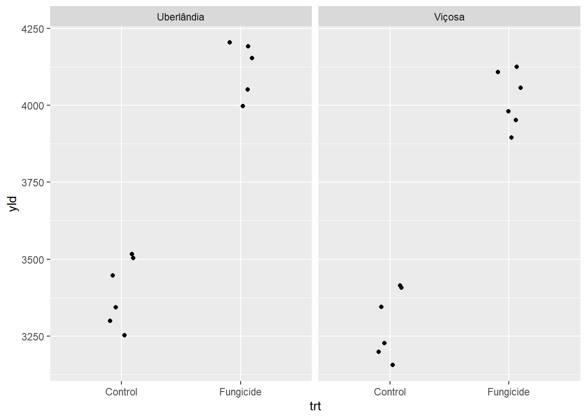
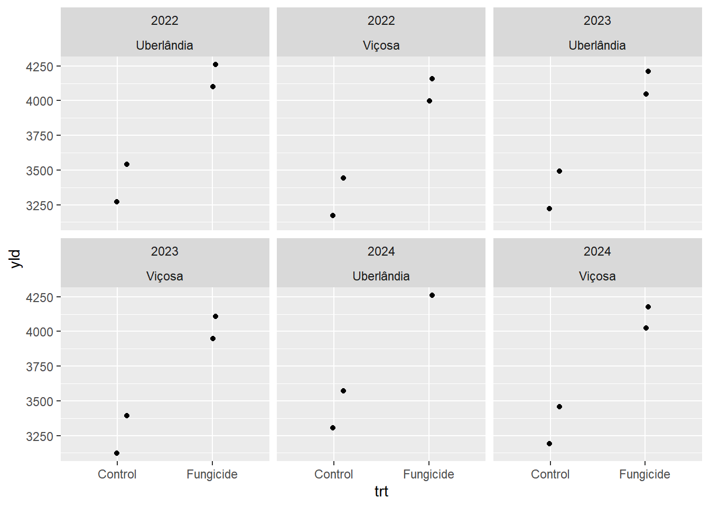
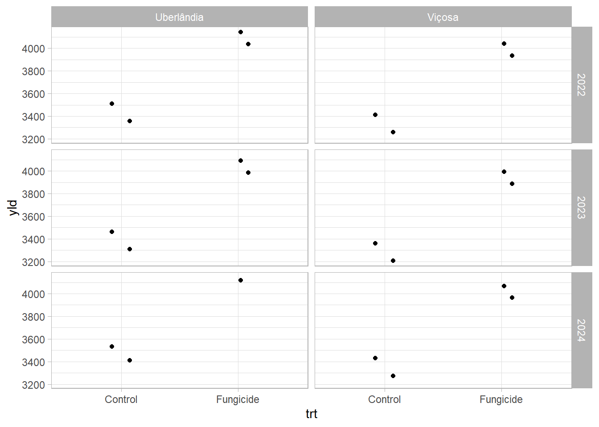
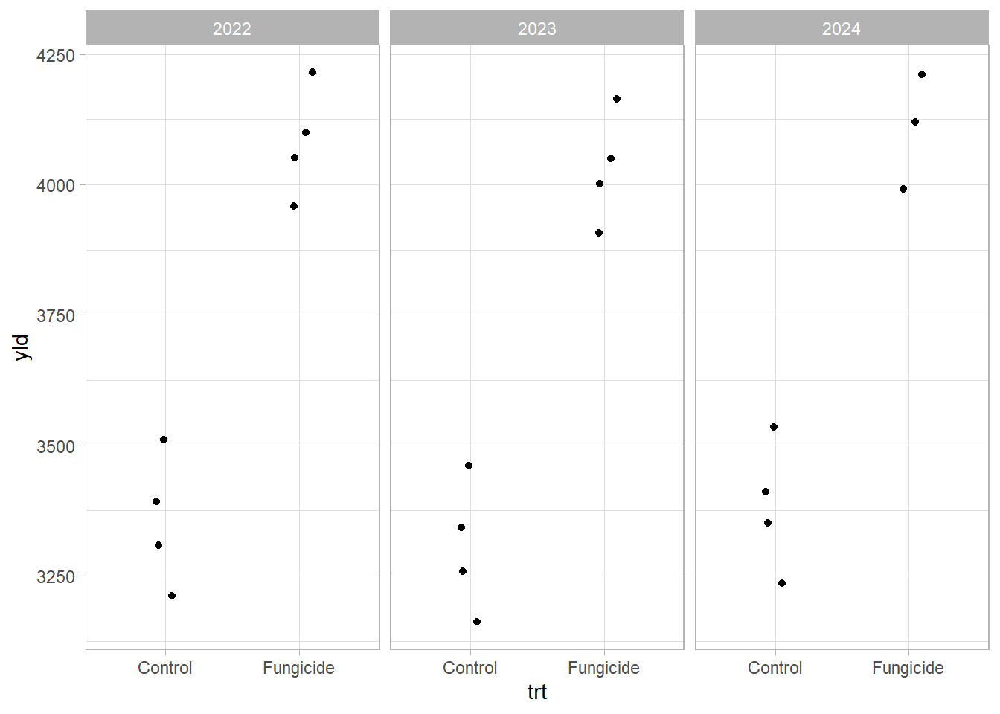
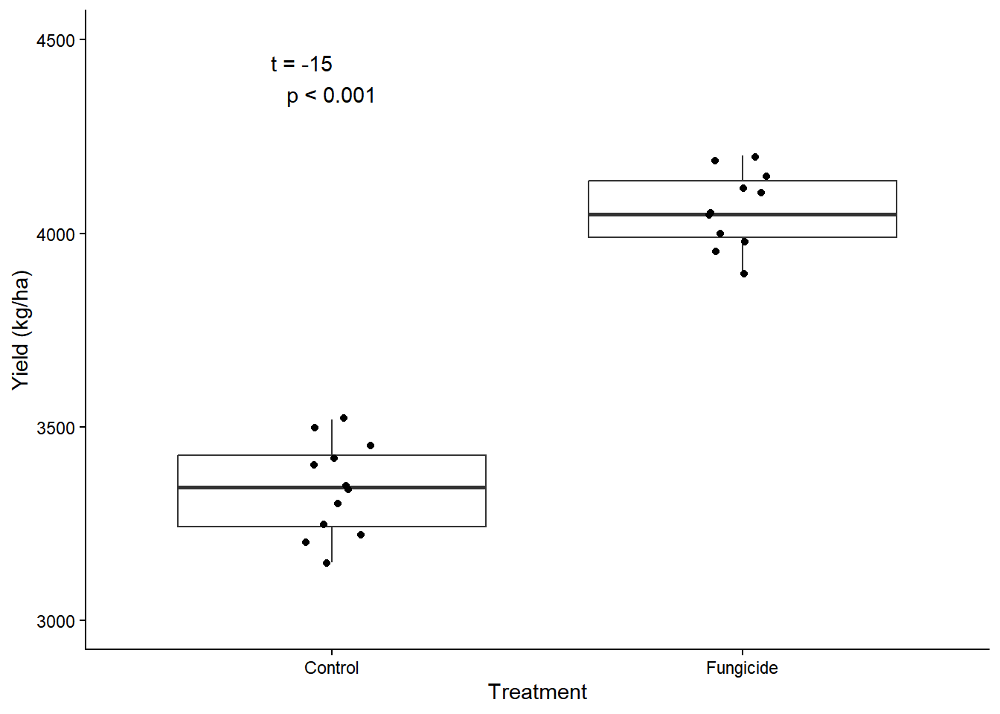

Aula 3: Manipulação e Integração de Diferentes Bases de Dados
Author
Milton Galvino
Arquivos com modos diferentes de escrever os dados
Nesta seção, vamos carregar pacotes e ler diferentes conjuntos de dados (arquivos .csv). Utilizaremos a função glimpse para visualizar um resumo rápido de cada data frame importado. Além disso, veremos como renomear colunas (rename) e criar novas colunas baseadas em cálculos (mutate).
library(tidyverse)
── Attaching core tidyverse packages ──────────────────────── tidyverse 2.0.0 ──
✔ dplyr 1.1.4 ✔ readr 2.1.5
✔ forcats 1.0.0 ✔ stringr 1.5.1
✔ ggplot2 4.0.2 ✔ tibble 3.3.0
✔ lubridate 1.9.4 ✔ tidyr 1.3.1
✔ purrr 1.2.1
── Conflicts ────────────────────────────────────────── tidyverse_conflicts() ──
✖ dplyr::filter() masks stats::filter()
✖ dplyr::lag() masks stats::lag()
ℹ Use the conflicted package (<http://conflicted.r-lib.org/>) to force all conflicts to become errors
Rows: 8 Columns: 7
── Column specification ────────────────────────────────────────────────────────
Delimiter: ","
chr (3): location, cultivar, treatment
dbl (4): year, block, severity, yield_kg_ha
ℹ Use `spec()` to retrieve the full column specification for this data.
ℹ Specify the column types or set `show_col_types = FALSE` to quiet this message.
d23 <-read_csv("experiment_2023.csv")
Rows: 8 Columns: 7
── Column specification ────────────────────────────────────────────────────────
Delimiter: ","
chr (3): site, cult, trt
dbl (4): Year, rep, sev, yield
ℹ Use `spec()` to retrieve the full column specification for this data.
ℹ Specify the column types or set `show_col_types = FALSE` to quiet this message.
d24 <-read_csv("experiment_2024.csv")
Rows: 8 Columns: 6
── Column specification ────────────────────────────────────────────────────────
Delimiter: ","
chr (3): location, cultivar, treatment
dbl (3): block, severity_pct, yield_kg_ha
ℹ Use `spec()` to retrieve the full column specification for this data.
ℹ Specify the column types or set `show_col_types = FALSE` to quiet this message.
# Renomeando a coluna "yield" para "yld"d23a <- d23 |>rename(yld=yield)# Criando uma nova coluna com o logaritmo dos valores de "yield"d23a <- d23 |>mutate(yld=log(yield))
Padronizar o nome das colunas
Para podermos juntar planilhas de anos diferentes, elas precisam ter as mesmas colunas. O uso do rename nos permite padronizar os nomes. Também usaremos select para reordenar colunas e rbind para unir todos os dados em um único data frame chamado d_all.
Corrigir a escrita de determinados valores nas colunas
Podemos utilizar a função case_match dentro do mutate para mapear e substituir valores específicos. O parâmetro .default garante que os valores não especificados permaneçam inalterados.
Adicionar colunas de latitude e longitude nos dados
Para realizar análises geoespaciais e mapas, podemos criar um data frame com as coordenadas e uni-lo ao nosso conjunto principal utilizando a função left_join. Essa função liga as tabelas com base em valores de colunas correspondentes (neste caso, a cidade em site).
site <-c("Viçosa", "Uberlândia") lat <-c(-20.7544, -18.9186)long <-c(-42.8819, -48.2772)# Formando um data frame a partir de vetorescoordenadas <-data.frame (site, lat, long) # Agrupando as coordenadas ao dataframe originald_allc <-left_join(d_alla, coordenadas)
Joining with `by = join_by(site)`
Montagem de gráficos baseados na base dados que foram modificadas
O pacote ggplot2 permite a criação de gráficos complexos camada por camada. A função facet_wrap e facet_grid ajudam a subdividir o gráfico em painéis baseados em diferentes variáveis categóricas (como site e year).
# Gráficos de dispersão divididos por localidaded_allc |>ggplot(aes(trt, yld))+geom_jitter(width=0.1)+facet_wrap(~site)
Warning: Removed 1 row containing missing values or values outside the scale range
(`geom_point()`).

# Gráficos divididos por ano e localidaded_allc |>ggplot(aes(trt, yld))+geom_jitter(width=0.1)+facet_wrap(year~site)
Warning: Removed 1 row containing missing values or values outside the scale range
(`geom_point()`).

# Gráfico matriz relacionando duas variáveisd_allc |>ggplot(aes(trt, yld))+geom_jitter(width=0.1)+facet_grid(year~site)+theme_light()
Warning: Removed 1 row containing missing values or values outside the scale range
(`geom_point()`).

# Removendo o fator site caso não seja significativod_allc |>ggplot(aes(trt, yld))+geom_jitter(width=0.1)+facet_grid(~year)+theme_light()
Warning: Removed 1 row containing missing values or values outside the scale range
(`geom_point()`).

Gráfico Boxplot Customizado
Aqui nós mesclamos a geometria de boxplot (geom_boxplot) e a de dispersão espalhada (geom_jitter), permitindo analisar não só os quartis da amostra mas também a disposição individual de cada ponto. A função annotate permite adicionar um texto arbitrário sobre o gráfico, como o resultado de um teste de hipóteses.
p1 <- d_allc |>ggplot(aes(trt, yld))+geom_boxplot(outlier.colour =NA)+# Omitindo outliers já que usaremos jittergeom_jitter(width=0.1)+theme_classic()+ylim(3000,4500)+labs(x="Treatment", y="Yield (kg/ha)")+annotate(geom="text", x =1, y=4400, label ="t = -15 p < 0.001") p1
Warning: Removed 1 row containing non-finite outside the scale range
(`stat_boxplot()`).
Warning: Removed 1 row containing missing values or values outside the scale range
(`geom_point()`).

ggsave("p1.png", width =6, height =4)
Warning: Removed 1 row containing non-finite outside the scale range (`stat_boxplot()`).
Removed 1 row containing missing values or values outside the scale range
(`geom_point()`).
Teste T de Student para amostras independentes
O Teste T avalia se há diferença estatística significativa entre as médias de dois grupos (neste caso, a produtividade yld em relação aos dois tratamentos trt). A Hipótese Nula (\(H_0\)) assume que não há diferença (as médias são iguais).
O p-valor (p-value) representa a probabilidade de se observar os dados amostrais coletados caso a \(H_0\) seja verdadeira. Na maioria dos estudos agronômicos, adota-se um nível de significância de 5% (\(\alpha = 0.05\)). Se o p-valor for \(\le 0.05\), rejeitamos \(H_0\) e concluímos que a diferença entre os tratamentos é estatisticamente significativa.
library(rstatix)
Anexando pacote: 'rstatix'
O seguinte objeto é mascarado por 'package:stats':
filter
# Usando a função nativa do R para o teste Tt.test(yld~trt, data = d_allc)
Welch Two Sample t-test
data: yld by trt
t = -15.737, df = 20.762, p-value = 5.186e-13
alternative hypothesis: true difference in means between group Control and group Fungicide is not equal to 0
95 percent confidence interval:
-816.4113 -625.7099
sample estimates:
mean in group Control mean in group Fungicide
3341.667 4062.727
Gráficos Interativos
Podemos utilizar a biblioteca plotly para converter um gráfico estático do ggplot2 num gráfico interativo diretamente no visualizador do RStudio.
library(plotly)
Anexando pacote: 'plotly'
O seguinte objeto é mascarado por 'package:ggplot2':
last_plot
O seguinte objeto é mascarado por 'package:stats':
filter
O seguinte objeto é mascarado por 'package:graphics':
layout
# Criando um plot interativoggplotly (p1)
Warning: Removed 1 row containing non-finite outside the scale range
(`stat_boxplot()`).
# Removendo a barra de opções do viewerp1_interativo_SB <-ggplotly(p1) |>config(displayModeBar=FALSE)
Warning: Removed 1 row containing non-finite outside the scale range
(`stat_boxplot()`).
Adicionar os dados de tabela em mapas
O pacote sf e rnaturalearth nos auxiliam a trabalhar com mapas geográficos e plotá-los diretamente usando a lógica do ggplot2. Neste exemplo, vamos cruzar dados de latitude e longitude do Excel sobre locais na Etiópia.
Linking to GEOS 3.13.0, GDAL 3.10.1, PROJ 9.5.1; sf_use_s2() is TRUE
library(rnaturalearth)library(rnaturalearthdata)
Anexando pacote: 'rnaturalearthdata'
O seguinte objeto é mascarado por 'package:rnaturalearth':
countries110
# Obtendo os contornos da Etiópia no formato "sf" para o ggplot2ethiopia_map <-ne_countries(scale ="medium", country ="ethiopia",returnclass ="sf") # Construindo o mapa com camadasggplot() +# Camada base: o mapageom_sf(data = ethiopia_map, fill ="antiquewhite", color ="darkgrey") +# Camada de dados: as fazendas usando geom_pointgeom_point(data = cr, aes(x = lon, y = lat), color ="brown", size =2, alpha =0.7) +# Transparência ajuda com pontos sobrepostos# Estética e coord_sf (para garantir as proporções geográficas)theme_minimal() +labs(title ="Localização das Fazendas de Café - Etiópia", subtitle ="Dados de Coffee Rust", x ="Longitude", y ="Latitude") +coord_sf()
Montar mapa do Brasil
Baixar pacotes específicos do Github ou Repositórios externos
Alguns pacotes podem não estar na rede principal do R (CRAN). Para baixar o nível de detalhamento dos estados do rnaturalearth, devemos instalá-lo através de repositórios específicos.
Com os dados definidos, o procedimento para montar um mapa complexo se assemelha ao do mapa anterior. No entanto, vamos explorar a utilização de geom_text_repel para rotular de forma inteligente (sem sobreposição) e a annotation_scale com annotation_north_arrow para dar uma aparência totalmente profissional ao nosso mapa.
library(ggplot2)library(readxl)library(sf)library(rnaturalearth)library(rnaturalearthdata)library(ggthemes)library(ggrepel)library(ggspatial)# Obtendo geometria dos estados brasileirosbr_map <-ne_states (country ="Brazil", returnclass ="sf")br_map |>ggplot()+geom_sf(fill ="antiquewhite", color ="darkgrey")+geom_point(data= coordenadasbrasil, aes(long, lat), color="brown")+theme_minimal()+# A função repel espalha os nomes das capitais automaticamentegeom_text_repel(data=coordenadasbrasil, aes(long, lat,label = site),color="black",size=3)+# Adicionando uma régua de escala no canto inferior esquerdo (bl)annotation_scale( location ="bl", width_hint =0.5, style ="bar")+# Adicionando a Seta de Norte baseada no norte verdadeiroannotation_north_arrow( location ="bl", which_north ="true", pad_x =unit(0.1, "in"), pad_y =unit(0.3, "in"), style =north_arrow_fancy_orienteering())
Scale on map varies by more than 10%, scale bar may be inaccurate